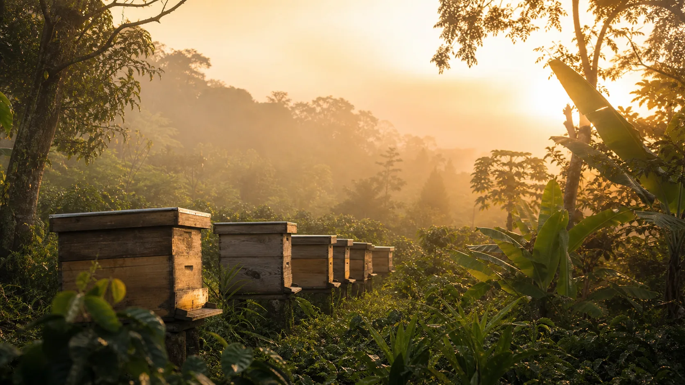
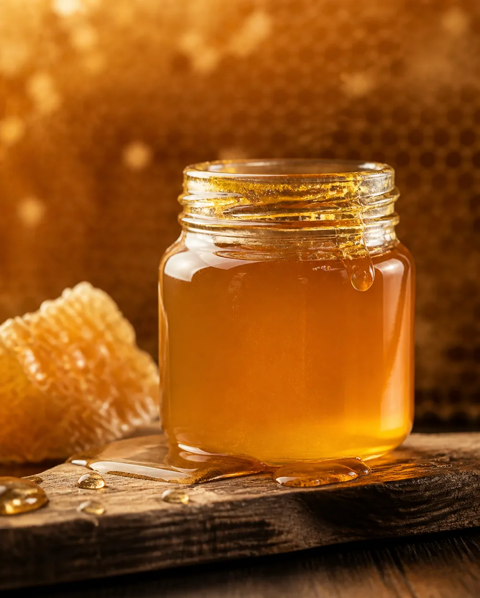
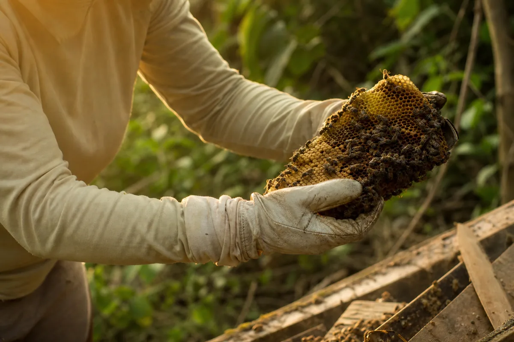
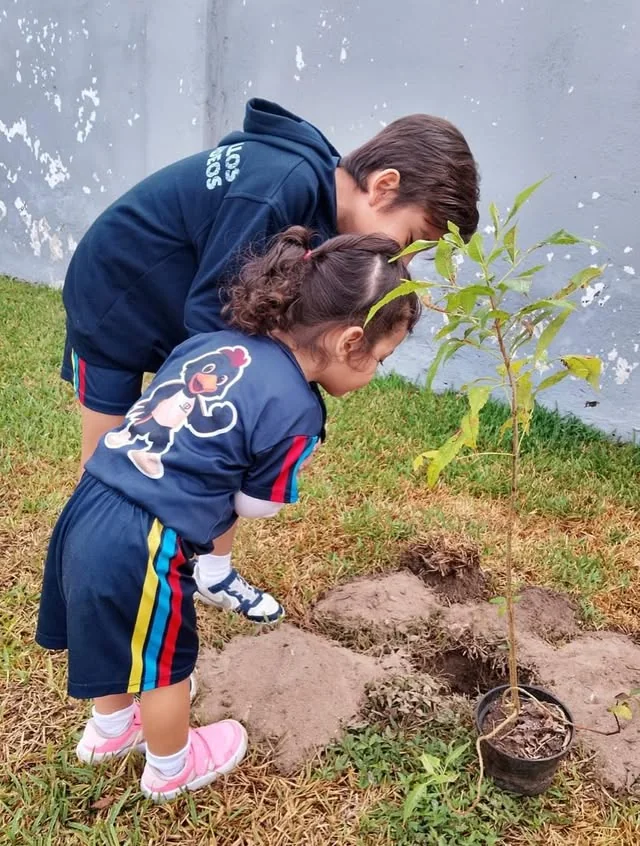
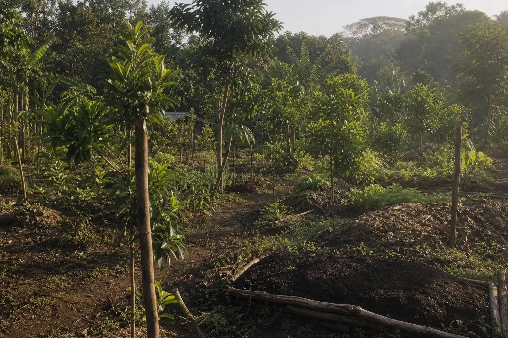
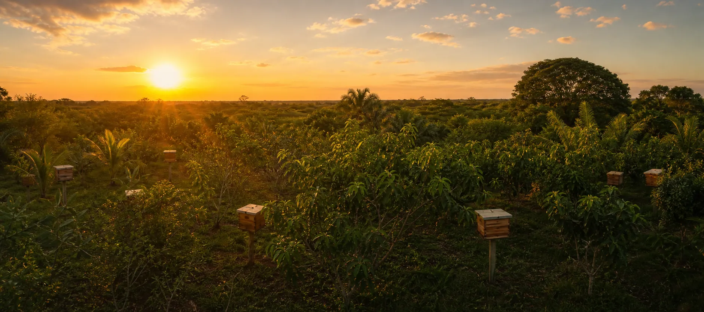

Apiyauya —del huichol, "protectores de las abejas"— es un rancho de permacultura dedicado al rescate y cuidado de abejas nativas, la educación ambiental y la vida silvestre de Veracruz.
Cada colonia que rescatamos es una oportunidad de vida devuelta al ecosistema. Cuidamos a las abejas porque, sin ellas, se apaga todo lo demás.
Apiyauya surgió de la necesidad de crear un pequeño refugio para las abejas. Hoy es un proyecto familiar, impulsado por Mariana Torroella Torres y su familia, que integra la conservación con prácticas de permacultura reales.
El rancho también da refugio a monos araña y suma trabajo previo en conservación de coral: la protección de la vida silvestre es parte de su forma de habitar la tierra.
Cuidamos cuatro especies —la Apis mellifera y tres meliponas nativas sin aguijón— como pilar de la polinización y la vida silvestre de la región.
Cuando una colonia silvestre aparece donde no debería, vamos por ella y le damos una nueva oportunidad de vida dentro del santuario.
Huertos, árboles nativos, composta y casas para abejas: el rancho funciona como un sistema vivo donde cada pieza trabaja en conjunto.
Combinamos la Apis mellifera con tres especies nativas de meliponas —abejas sin aguijón— fundamentales para la polinización de los ecosistemas veracruzanos.
La abeja europea que casi todos conocemos: productora de miel y una de las polinizadoras más incansables del rancho.
Productora de mielEndémica de la región, poliniza flores que otras abejas no alcanzan. Su miel es rara y de valor medicinal.
Polinizadora claveUna segunda especie meliponina bajo conservación en el santuario, protegida colonia por colonia.
En conservaciónEndémica de Veracruz y esencial para el equilibrio del ecosistema local: cada colmena cuenta.
Endémica
Por el tipo de flor que visitan, la miel de nuestras meliponas tiene propiedades cicatrizantes y antiinflamatorias, y ayuda a subir las defensas. Cada colonia produce apenas 1 a 2 litros al año — por eso es tan valiosa.
Cuando una colonia silvestre aparece donde no debería —una pared, un árbol a punto de talarse, un techo— vamos a rescatarla. Es trabajo real: calor, muchas horas, riesgo de picaduras. A cambio, la colonia recibe una nueva oportunidad de vida en el santuario.
Alguien reporta un enjambre en una pared, un techo o un árbol a punto de talarse. Vamos al sitio y evaluamos cómo intervenir sin dañar a las abejas.
Con paciencia y sin químicos, retiramos el panal y a la reina. Cada movimiento cuenta: si la reina sobrevive, la colonia entera se salva.
La colonia se reubica en el santuario, donde sigue creciendo, poliniza el rancho y suma a la conservación de la especie.


Compartimos lo que hacemos en el rancho con escuelas, familias y medios que nos visitan: talleres sobre abejas, meliponicultura y conservación, para que el cuidado del entorno se vuelva costumbre.
Recorridos para conocer de cerca el manejo de las colmenas y la permacultura en acción.
Días de reforestación abiertos a la comunidad, en escuelas y colonias de la zona.
Cómo cuidar y convivir con abejas sin aguijón, para familias y curiosos.
Recibimos a medios locales que documentan el trabajo de conservación del santuario.

Huertos sustentables, árboles nativos, composta y vermicomposta, y casas construidas para darle hogar a las abejas. Cada pieza del terreno trabaja en conjunto con las colonias que cuidamos.

Nos encontrarás en la comunidad Juan Alfaro, Medellín de Bravo, Veracruz — a poca distancia de Veracruz y Boca del Río. Ven a conocer a las abejas, el huerto y el trabajo de rescate.
Escríbenos para agendar una visita o taller, reportar una colonia que rescatar, o sumarte como colaborador del santuario.
📱 229 161 4789 · ✉️ apiyauya@hotmail.com
📍 Comunidad Juan Alfaro, Medellín de Bravo, Veracruz, México